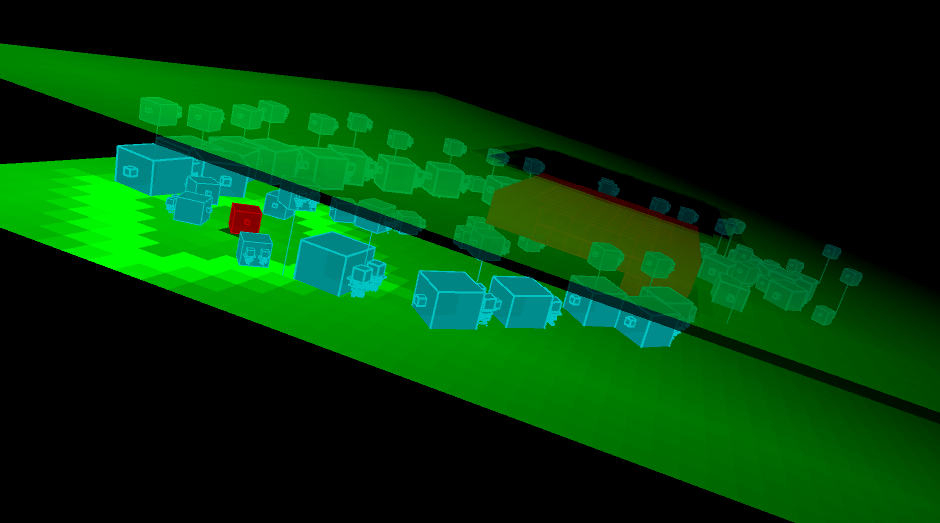
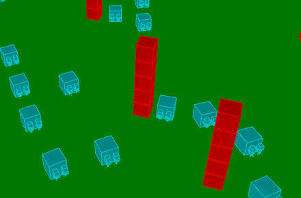
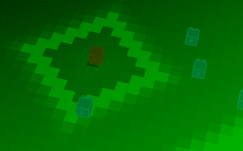
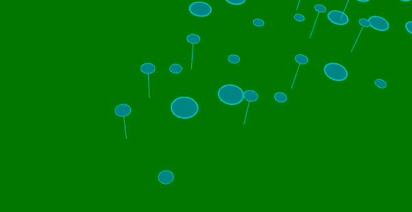
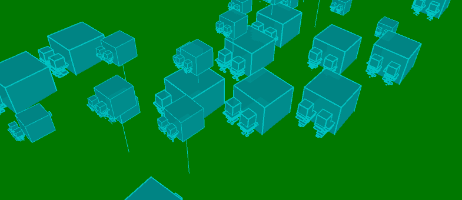
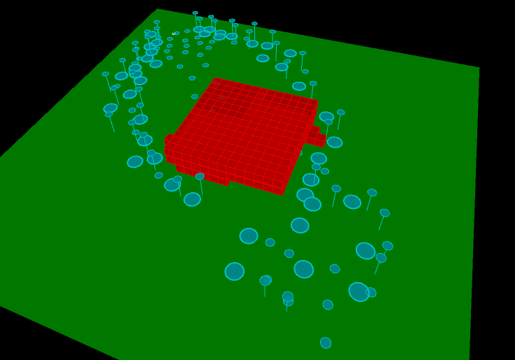
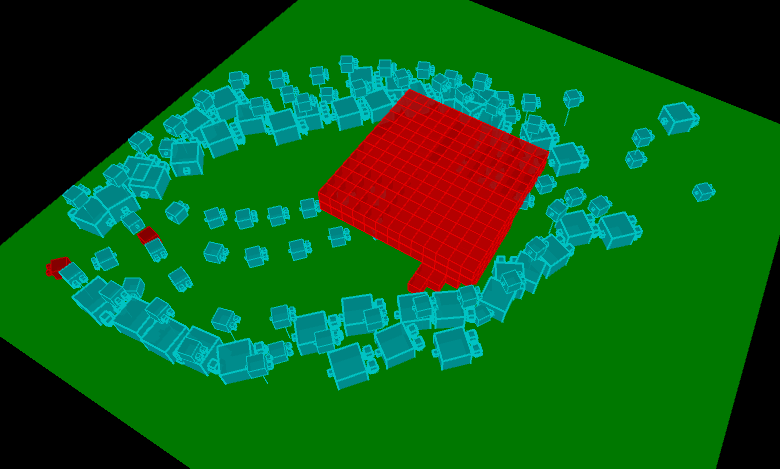

<div class="col s10 m10 l10">
	<!-- Teal page content  -->

	<div class="row">
		<div class="col s12 m9 l9">
			<div id="pf" class="section scrollspy">
				<h1 class="header light">potential field rts path planning with multilayer agents</h1>
					<center>
						
						<video width="400" controls>
							<source src="./whole.mov" type="video/mp4">
								your browser does not support html5 video.
						</video>
					</center>
					<h3 class="header light">introduction</h3>
					<p class="light">
						we are a huge fan of starcraft. the ai of starcraft is very advanced. the path planning envolved is very interesting. so we decided to implement a variant of our own. with our implementation of boids for last project we wan to go further with it. we google online and found details about it. it used continuum crowd simulation and flocking crowd to achieve the final goal of the ai in starcraft according to posts online (not offically confirmed but highly likely due to the behavior of the game). we decided to work on continuum crowd. the paper that talks about this is highly abstract and they are more focused on crowd behavior instead of what we were thinking. we want to implement a pathing finding system for crowds that could eliminate a lot of problems and is suitable for rts games. in the end we came up with simulation that combines multilayer agent moving system, potential field base on boids. 
					</p>
					<h3 class="header light">agent</h3>
					<p class="light">
						since we are simulating agents, we want our agents to look good. so first take a look of a screenshot of the agents.
						
						the agent is consisted of multiply boxes and a particle system to simulate the rocket jack on the back. the agent is a floating agent with rocket jack powering him. so when they float up and down base on sine function and looks very awesome. below is a video of how it look when it is live.
						<center>
							<video width="400" controls>
			        	<source src="./agent.mov" type="video/mp4">
			    			your browser does not support html5 video.
							</video>
						</center>
					</p>
				<h3 class="header light">potential field</h3>
				<p class="light">
					we devided our terrain into 50x50. so we have grid of size 2500. at each update, we recalculate the potential field base on the location of the agent. more green it is it represents that the potential there is higher. and the agenta are guided to higher potentials. the potential near the obstacles are calculated with a decay. so the further the grid is the lower the potential is. and the most important potential is calculated from the goal. there is a decay based on manhantenn distance between the gird and the goal for faster computer and it works really well too.
					
					and as always a video of a working simulation.
					<center>
						<video width="400" controls>
							<source src="./pf.mov" type="video/mp4">
							your browser does not support html5 video.
						</video>
					</center>
					note the jiggling around the small open space. if we replace the fancy rendered agents with simple floating circles it will look way better. but we decided to keep the agents since although they don't look very good they illustrates how idea. the result of abling to path through and go to the goal is well illustrated.
				</p>
				<h3 class="header light"> boid movement</h3>
				<p class="light">
					the movement purely based on potential field looks really bad. and there could be a lot of error when a large crowd of agents are together. so instead of using potential field for agent movement. we decided to go the other way of using boids as a agent navigation stategy. so in the new version, the agents move on the potential field as before. however, this time the potential field is generated base on the terrain and agent influences to the potential field are removed. the agents will move on its own and they move like boids in the last assignment. you can see in the follow picture how they moves. 
					
				<h3 class="header light"> enemy implementation </h3>
				<p class="light">
					how can a rts does not have enemies! so we decided to implement the potential field with enemies in mind. each agent have a attacking range. and a corresbonding potential fiels is created base on this that will attract the our agents to attack the enemies. the algorithm we used to generate the enemies' potential field is to have it increase the value of the potential field at the points around it and you can clearly see in the following picture. 
				
				</p>
				<h3 class="header light"> multilayer implememtation </h3>
				<p class="light">
					in games like starcraft, there are units that are of multiply layer. so we decided to implement one in our simulation as well. we had a 2 layer system. with the top layer a flying unit layer and bottom layer a ground unity layer. and there are huge units that are of twice the size of normal ones that belongs to both layers. as a multilayer implementation, we decided to let huge units and ground units aviod each other, and flying units avoid them selfs. to demostrate better which units are flying units we used circles to represent the units and a line connecting the circle to the ground to highlight they are flying units. 
					
					and in normal renderring form. 
					
					and a video demestrating them in action.
					<center>
						<video width="400" controls>
							<source src="./ml.mov" type="video/mp4">
							your browser does not support html5 video.
						</video>
					</center>
				</p>
				<h3 class="header light"> wrap up </h3>
				<p class="light">
					now, let's wrap things up. with the implementation of multilayer agents and potential fields and enemies. we can observe from the following. that the huge agents will avoid both the high obstacles and lower obstacles. and the flying agent will only avoid the upper obstacles and the ground units will only avoid ground obstacles.
				
				
				</p>

				<h3 class="header light">Difficulties Faced</h3>
				<p class="light">
					We encountered a lot of problems for this simulation. The most difficult part was trying to figure out how to have a potential field based agent avoidance. However, after hours and hours of reading online and trying we decided to to it with ideas in continuum crowd that using a normal flock/boid implementation. Another thing we just gave up was to have a mouse control system. In processing with using of 3d camera, the mouse position were so hard to implement. So in the end, we decided to just not implement one. We spend over 2 nights on this topic and the best we could do is having a 3d mouse coordinate with if we lower it to the 2d platform it will have a lot of offset and the behavior of the location of the 3d mouse is very unintuitive we couldn't even understand what ray-sphere means(which is what was supposed 3D mouse is to implement on). Besides these 2 things that we were not able to deliver, we conqured all other things that we faced. Since most of them are technical (SYNTAX!!!) issue we won't state them. Also, observe the wiggling that some of the agents act when they are near others or obstacles? We are aware of that. We even found a paper online about how to get rid of them. Since that in the same simulation with just circles displayed they look totally fine. However, we do not have the time to do so. This would make a great further work to do if we had one. 
				<h3 class="header light">Resources Used</h3>
				<p>
					Websites
					<li> <a href="http://aigamedev.com/open/tutorials/potential-fields/"> Potential fields in RTS </a></li>
					<li><a href="http://grail.cs.washington.edu/projects/crowd-flows/"> Crowd Flow </a></li>
					Tools
					<li><a href="http://processing.org"> Processing</a> </li>
					<li><a href="http://mrfeinberg.com/peasycam/"> PeasyCam (Processing Plugin)</a></li>
				</p>
			</div>

		</div>

		<div class="col hide-on-small-only m3 l3">
			<div class="toc-wrapper">
				<ul class="section table-of-contents">
					<li><a href="#pf">Potential Field RTS Path Planning</a></li>
				</ul>
			</div>
		</div>

	</div>
</div>
